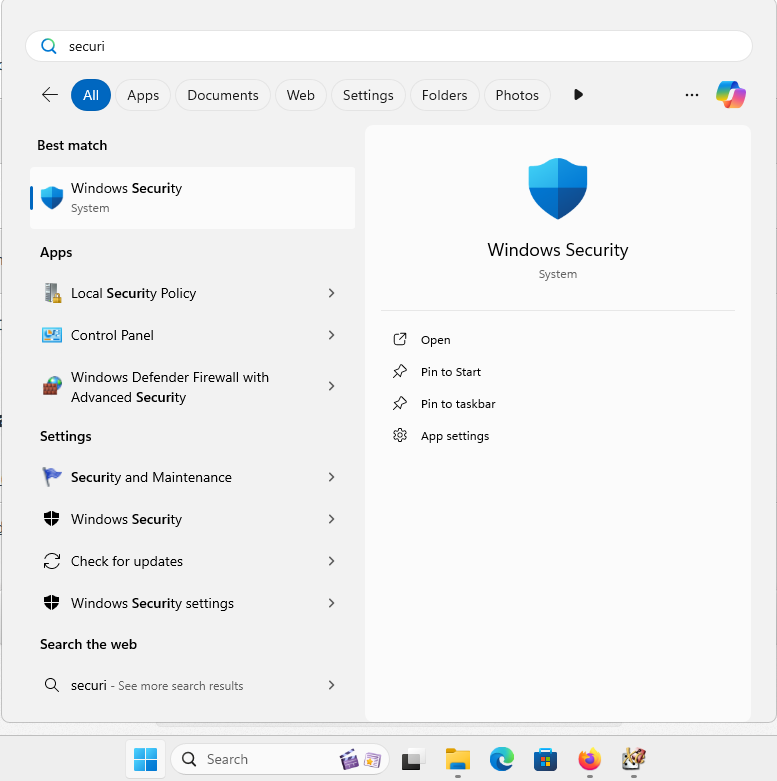
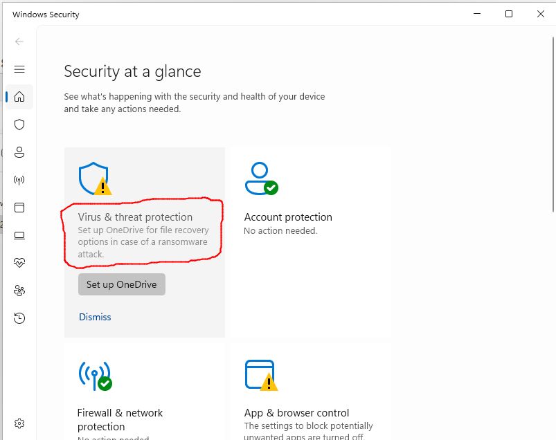

10. Appendice Windows: rilevamento errato di blunderDB come malware
Nota
Quanto segue riguarda i sistemi operativi Windows 10 e 11.
Oggi Windows richiede alle società di editoria software o agli sviluppatori software indipendenti di certificare digitalmente le proprie applicazioni o addirittura di distribuirle tramite il Windows Store. È quindi consigliato rivolgersi a società esterne per ottenere un certificato digitale al costo di diverse centinaia di euro (vedere ad esempio https://learn.microsoft.com/en-us/archive/blogs/ie_fr/certificats-de-signature-de-code-ev-extended-validation-et-microsoft-smartscreen ).
Partageant blunderDB gratuitement, je ne souhaite pas m’orienter vers ces possibilités onéreuses. Une piste gratuite réservée aux logiciels libres (la SignPath Foundation, https://signpath.org/) est à l’étude pour signer les binaires Windows sans frais ; tant qu’elle n’est pas en place, il est fort probable que Windows vous avertisse d’un potentiel danger, voire bloque complètement l’exécution de blunderDB. Les sections suivantes expliquent les opérations à réaliser pour passer outre les réticences de Windows.
10.1. Avviso Windows SmartScreen
Dopo aver scaricato blunderDB, durante la sua esecuzione è possibile che Windows mostri un avviso del tipo

Se desiderate autorizzare un eseguibile specifico bloccato da SmartScreen:
Provare a eseguire l’eseguibile:
Quando provate ad avviare l’eseguibile, SmartScreen può bloccarlo e mostrare un avviso.
Fare clic su «Ulteriori informazioni»:
Nella finestra di avviso di SmartScreen, fate clic su Ulteriori informazioni.
Selezionare «Esegui comunque»:
Se vi fidate dell’eseguibile, fate clic su Esegui comunque per aggirare l’avviso di SmartScreen per questa istanza.
10.2. Blocco di Windows Defender
Per alcune impostazioni di sicurezza di Windows, può capitare che nonostante lo sblocco di SmartScreen (vedere la sezione precedente), Windows Defender impedisca l’esecuzione di blunderDB con messaggi del tipo

oppure

o addirittura metterlo in quarantena.
Windows Defender è noto per generare falsi positivi. Questo problema è esplicitamente menzionato nelle FAQ del sito ufficiale di Golang ( https://go.dev/doc/faq#virus ) o in ticket Github di alcuni progetti programmati in Go ( https://github.com/golang/vscode-go/issues/3182 ).
Se desiderate impedire alla Sicurezza di Windows di analizzare blunderDB:
Aprire la Sicurezza di Windows:
Andate su Start e digitate Sicurezza di Windows.

Andare su «Protezione da virus e minacce»:
Fate clic su Protezione da virus e minacce.

Gestire le impostazioni:
Scorrete verso il basso e fate clic su Gestisci impostazioni sotto Impostazioni di protezione da virus e minacce.

Aggiungere o rimuovere esclusioni:
Scorrete fino alla sezione Esclusioni e fate clic su Aggiungi o rimuovi esclusioni.

Aggiungere un’esclusione:
Fate clic su Aggiungi un’esclusione e selezionate File. Navigate quindi fino all’eseguibile che desiderate escludere e selezionatelo.


10.3. Vérifier l’intégrité du téléchargement (SHA256)
Chaque binaire publié sur la page des releases est accompagné d’un fichier
.sha256 contenant son empreinte cryptographique. Vérifier cette empreinte
permet de s’assurer que le fichier téléchargé est authentique et n’a pas été
altéré, ce qui constitue une garantie utile en l’absence de signature de code.
Sous Windows (PowerShell), dans le dossier de téléchargement :
Get-FileHash .\blunderDB-windows-<version>.exe -Algorithm SHA256
Comparez la valeur affichée avec celle du fichier
blunderDB-windows-<version>.exe.sha256. Les deux doivent être identiques.
Sous Linux ou macOS :
sha256sum -c blunderDB-linux-<version>.sha256 # Linux
shasum -a 256 -c blunderDB-macos-<version>.zip.sha256 # macOS